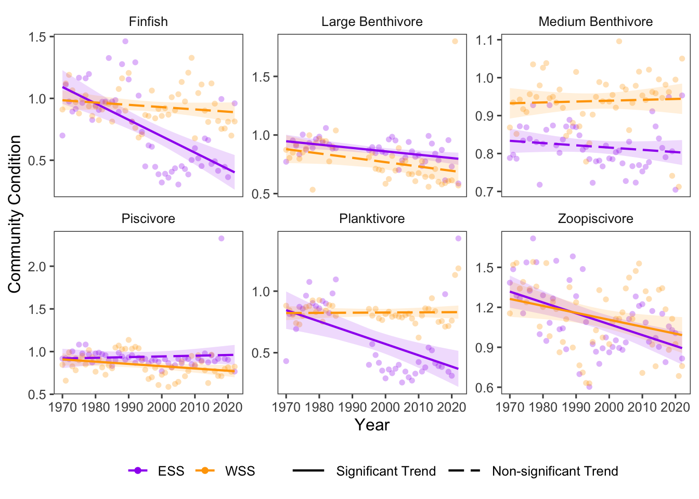

16 Fish Community Condition
Data Type: Tabular Data (within eco_indicators)
Spatial Scope: Maritimes
Duration 1970-2022
Source: Bundy et al. 2017
16.1 Introduction to Indicator
Fulton’s Condition factor (TW 1904) is a ratio of body weight to length, or the relative “plumpness” of fish. Fulton’s condition is calculated as condition = 100 * weight / length^3, and is used for a proximal for fish health. Higher condition factors represent fish that are heavier at a given length, and are assumed to be in better condition. However, Fulton’s condition does not always correlate with more precise measures of fish body condition, especially when the assumotion of isometric growth is violated.
While comparisons of Fulton’s condition between species or subgroups might be hindered by inherent differences in mass to length ratios between group, comparisons of Fulton’s condition can be made between individuals within a species in in aggregate for a species over time to capture overall trends or indicate resource limitations or excesses (Ricker 1975). Fulton’s condition can also change seasonally, representing variation in nutritional resources available throughout the year in seasonal environments.
Although Fulton’s condition will depend on the size and shape of individual species, a condition of 1 is generally considered a “normal” condition. Values above 1 represent fish in good condition, and below 1, fish in poor condition.
16.2 View Data
library(tidyr)
library(plotly)
library(stringr)
plotly_df <- data@data %>% inner_join(global_cols3)
# function to create plot with dropdown menu ------------------------------
make_biomass_dropdown_plot <- function(df,
year_col = "year",
region_col = "region",
value_suffix = "_value") {
# convert to long format
long <- df %>%
janitor::clean_names() %>%
pivot_longer(
cols = ends_with(value_suffix),
names_to = "metric",
values_to = "value"
) %>%
# remove suffix
mutate(
metric = str_remove(metric, "_value")
) %>%
# drop NAs (some regions don't have data for some variables or years)
tidyr::drop_na(value)
# find all metrics and regions
metrics <- unique(long$metric)
regions <- unique(long[[region_col]])
# assign regions to consistent colors
# region_colors <- setNames(hcl.colors(length(regions), palette = "Dark 3"), regions)
# clean names for dropdown panels, helper
pretty_label <- function(x) str_to_title(gsub("_", " ", x)) %>% gsub("Lb","Large B",.) %>% gsub("Mb","Medium B",.) %>% str_replace("C Condition ","")
# build plot -----------------
p <- plot_ly()
# Add bar traces: metric1 has region1..K, metric2 has region1..K, ...
for (metric_i in seq_along(metrics)) {
m <- metrics[metric_i]
for (region_i in regions) {
dat <- long %>%
filter(metric == m, .data[[region_col]] == region_i) %>%
group_by(.data[[year_col]],color, linetype, linewidth, region_group, region_group_label) %>% # in case you have multiple rows per year
summarise(value = sum(value), .groups = "drop") %>%
arrange(.data[[year_col]])
group_name <- unique(dat$region_group)
color <- unique(dat$color)
linetype <- unique(dat$linetype)
width <- unique(dat$linewidth)
# If a region truly has no data for that metric, add an empty trace
# (keeps trace indexing stable)
if (nrow(dat) == 0) {
dat <- tibble::tibble(!!year_col := integer(0), value = numeric(0))
}
p <- p %>% add_lines(
data = dat,
x = ~.data[[year_col]],
y = ~value,
name = as.character(region_i),
legendgroup = group_name,
legendgrouptitle = list(
text =
ifelse(region_i == "4VN" & group_name == "ESS",
"Eastern Scotian Shelf Zones",
ifelse(region_i == "4X",
"Western Scotian Shelf Zones",
NA))),
showlegend = (metric_i == 1),
visible = (metric_i == 1),
line = list(color = color, dash = linetype),
hovertemplate = paste0("<b>", region_i,":</b> ","%{y:.3f}<extra></extra>") )
}
}
n_regions <- length(regions)
n_traces <- length(metrics) * n_regions
buttons <- lapply(seq_along(metrics), function(metric_i) {
vis <- rep(FALSE, n_traces)
shl <- rep(FALSE, n_traces)
idx_start <- (metric_i - 1) * n_regions + 1
idx_end <- metric_i * n_regions
vis[idx_start:idx_end] <- TRUE
shl[idx_start:idx_end] <- TRUE
list(
method = "update",
args = list(
list(visible = vis, showlegend = shl),
list(
title = pretty_label(metrics[metric_i]),
yaxis = list(title = "Community Condition")
)
),
label = pretty_label(metrics[metric_i])
)
})
p %>%
layout(
barmode = "stack",
hovermode = "x unified",
title = pretty_label(metrics[1]),
xaxis = list(title = str_to_title(year_col)), # keep one bar per year
yaxis = list(title = "Community Condition", fixedrange = TRUE),
legend = list(
title = list(text = str_to_title(region_col)),
x = 1.02, xanchor = "left",
y = 1, yanchor = "top",
groupclick = "toggleitem"
),
updatemenus = list(list(
type = "dropdown",
x = -.1, xanchor = "left",
y = 1.15, yanchor = "top",
buttons = buttons
)),
margin = list(r = 180, t = 80),
# add horizontal line at 1
shapes = list(
type = "line",
xref = "paper",
yref = "y",
x0 = 0,
x1 = 1,
y0 = 1,
y1 = 1,
line = list(color = "black", width = 2, dash = "dash")
)
)
}
# usage:
p <- make_biomass_dropdown_plot(plotly_df)
p <- p %>% config(displayModeBar= F)
pFigure 16.1: Community condition in all NAFO regions and Scotian Shelf regions overall.
16.3 Trends
Community condition changes through time have differed between regions (Fig. 16.1. Across 6 functional groups, condition in the Eastern Scotian Shelf is generally decreasing, and community condition in the Western Scotian Shelf is more often decreasing. In the Eastern Scotian Shelf, 1 group had an increasing trend (0 significant), and 5 groups had decreasing trends (4 significant). In the Western Scotian Shelf, 2 groups increased in condition through time (0 significant), and 4 groups decreased in condition over time (2) (Fig. 16.2).
The strongest decrease in condition was in the Finfish group in the ESS region, and the strongest increase in condition was in the Piscivore in the ESS region (Fig. 16.2).

Figure 16.2: Fulton’s Condition for fish groups over time in Scotian Shelf
16.3.1 Summary Table by NAFO Region and Functional Group
Trends in Community Condition for each functional group in each NAFO region within the Eastern and Western Scotian Shelf region are shown in the table below (Table 16.1).
| variable | Eastern Scotian Shelf ccondition Trends | Western Scotian Shelf ccondition Trends |
|---|---|---|
| Finfish |
4VN: -2.97e-03 4VS: -1.73e-02 ∗ 4W: -8.13e-03 ∗ |
4X: -1.85e-03 |
| Large Benthivore | 4W: -5.46e-03 ∗ | 4X: -3.95e-03 ∗ |
| Medium Benthivore |
4VN: -1.45e-03 4VS: -2.69e-03 ∗ 4W: -1.99e-04 |
4X: 2.29e-04 |
| Piscivore |
4VN: -5.06e-04 4VS: -1.82e-03 ∗ 4W: 9.59e-04 |
4X: -2.67e-03 ∗ |
| Planktivore | 4W: -4.75e-03 ∗ | 4X: 7.58e-05 |
| Zoopiscivore |
4VN: -2.11e-03 4VS: -5.09e-03 ∗ 4W: -9.79e-03 ∗ |
4X: -5.22e-03 ∗ |
16.4 Relevance to Research and Stock Assessments
Fulton’s condition at the scale of fish stocks reveals several insights into stock health. For cod, stocks with higher Fulton’s condition factors have higher recruitment potential, and higher biological management reference points for safe exploitation without collapse (Fmed) (Rätz and Lloret 2003).
16.5 Additional Data
CCondition (within eco_indicators) contains data for 4VN, 4VS, 4W, 4X, ESS, and WSS. All are shown on this page, but note that NAFO zones are nested within Scotian Shelf regions.